시즌1
1스테이지 : 1-1은 근접 미니언 2마리, 1-2는 근접 미니언 2마리와 원거리 미니언 1마리, 1-3은 근접미니언 2마리, 원거리 미니언 2마리가 나온다.
2스테이지 : 2-6에서는 왼쪽에 돌거북 2마리, 오른쪽에 돌거북 1마리가 나온다. 돌거북은 하나를 잡으면 나머지 돌거북의 피가 모두 회복되므로, 오른쪽의 돌거북을 먼저 처리하는게 좋다.
3스테이지 : 3-6에서는 큰 늑대 1마리와 작은 늑대 4마리가 나온다. 늑대는 암살자 특성을 가지고 있으므로 후방 딜러가 물리지 않도록 박스를 철저히 치거나 딜러를 전진 배치하는 것이 좋다.
4스테이지 : 4-6에서는 큰 칼날부리 1마리와 작은 칼날부리 4마리가 나온다. 칼날부리들을 잡을 때마다 남은 칼날부리들의 몸집이 점점 커지며, 공격속도와 데미지가 상승한다.
5스테이지 : 5-6에서는 광역 공격을 하는 화염 드래곤이 나온다. 드래곤은 완성형 아이템을 하나 이상 장착하고 등장한다.
6스테이지 : 6 스테이지부터는 장로 드래곤/전령이 랜덤해서 등장하고 스테이지는 무한히 지속된다.
위에서 설명한 스테이지를 제외한 모든 부가 스테이지들은 PVE형태로 진행된다.
시즌1 시너지
계열
귀족
1
2 4
5
4
5
- 전투 시작 시 선택된 아군의 방어력이 +50, 마법 저항력이 50증가하며 적중 시 30의 체력을 회복한다.
- (3): 무작위 아군 하나에 적용
- (6): 모든 아군에 적용
 닌자
닌자
2
 3
4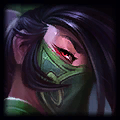
3
4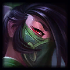
- 닌자는 추가 공격력과 주문력을 얻는다. 이 특성은 닌자가 정확히 하나 또는 각기 다른 닌자가 넷 있을 때 활성화된다.
- (1): 닌자 유닛 공격력 +50 및 주문력 +50% 증가
- (4): 닌자 유닛 공격력 +80 및 주문력 +80% 증가
로봇
2
- (1): 로봇은 마나가 가득 찬 상태로 전투를 시작한다.
마법공학
1
2
3 4
4
- 전투가 시작되면 아군 마법공학 유닛이 펄스 폭탄을 발사한다. 폭탄은 터지면서 근처 적들의 아이템을 5초동안 비활성화한다.
- (2): 1칸 내 비활성화
- (4): 2칸 내 비활성화
빙하
2 3
4
5
3
4
5
- 빙하는 기본 공격 시 일정 확률로 대상을 1.5초 동안 기절시킨다.
- (2): 적을 기절시킬 확률 20%
- (3): 적을 기절시킬 확률 33%
- (6): 적을 기절시킬 확률 50%
악마
1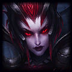
2
3
4
5
- 악마는 기본 공격 시 40%의 확률로 대상의 마나를 20만큼 감소시키고 자신의 마나를 회복한다.
- (2): 15마나 회복
- (4): 30마나 회복
- (6): 45마나 회복
야생
1
2
3
4
- 선택된 아군들이 강화되어 기본 공격 시 분노 중첩이 쌓인다. 최대 5번까지 중첩되며 중첩된 분노당 공격 속도가 10%증가한다.
- (2): 야생 아군에 적용
- (4): 모든 아군에 적용. 적이 기본 공격을 회피할 수 없다
용
3
4
5
- (2): 용은 마법 피해에 대한 저항력 75%를 얻는다.
 유령
유령
1
4
5
- (2): 전투 시작 시 무작위 적 하나가 100의 체력을 갖도록 한다.
 제국
제국
1
3
4
5
- 전투 시작 시 선택된 제국 유닛이 강화되어 두 배의 피해를 입힌다.
- (2): 무작위 제국 유닛 하나에 적용
- (4): 모든 제국 유닛에 적용
 추방자
추방자
5
- (1): 전투 시작 시 추방자 주변에 아군이 없다면 최대 체력의 100%만큼 피해를 흡수하는 보호막을 획득한다.
해적
1
2
3
5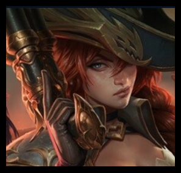
- (3):다른 플레이어와의 전투가 끝날 때마다 최대 4골드가 들어 있는 상자가 자신의 결투장에 생성된다.
직업
검사
1
2
3
4
5
- 검사는 기본 공격 시 45% 확률로 대상에게 추가 공격을 가한다. 추가 공격은 기본 공격과 같은 피해를 입히며 적중 시 효과가 적용된다.
- (3): 추가 공격 1회
- (6): 추가 공격 2회
- (9): 추가 공격 4회
 기사
기사
1
3 4
5
4
5
- 모든 아군이 모든 공격으로부터 받는 피해를 고정된 수치만큼 막는다
- (2): 15의 피해 방어
- (4): 30의 피해 방어
- (6): 60의 피해 방어
마법사
1 2
3
4
5
2
3
4
5
- 고유 - 마법사는 기본 공격 시 2배의 마나를 획득한다.
- 모든 아군의 주문력이 증가한다.
- (3): 주문력 +40%
- (6): 주문력 +120%
- (9): 주문력 +200%
수호자
2
4
5
- (2): 전투 시작 시 수호자들이 주변 아군들의 방어력을 +40 증가시킨다.(이 효과는 무제한 중첩될 수 있다.)
원소술사
2
3
4
5
- 고유 - 원소술사는 기본 공격 시 2배의 마나를 획득한다.
- (3): 전투 시작 시 2200의 체력을 지닌 골렘을 소환해 아군과 함께 싸우게 한다.
 정찰대
정찰대
1
2
3
4
5
- 정찰대는 3초마다 일정 확률로 다음 3초 동안 공격 속도가 두 배로 증가한다.
- (2): 40% 확률로 공격 속도 두 배로 증가
- (4): 70% 확률로 공격 속도 두 배로 증가
형상변환자
1
2
3
4
- 형상변환자는 변신 시 추가 최대 체력을 얻는다.
- (3): 추가 최대 체력 60%
- (6): 추가 최대 체력 100%
시즌1 챔피언코스트
 4코스트
4코스트
5코스트
시즌2 : 격동하는 원소
격동하는 원소
시즌 2에 추가된 특별한 시스템.
게임 시작 시에 무작위로 '원소'가 하나 정해지고 모든 플레이어의 결투장 타일에 원소 타일이 하나씩 생성된다.
3라운드가 시작되면 원소 타일이 하나 더 생긴다.
원소 타일이 생기는 위치는 무작위지만 모든 플레이어에게 같은 위치에 생선된다.
즉, 타일끼리 서로 대칭이다.
원소 타일에 놓은 챔피언은 다음과 같은 효과를 얻는다.
- 지옥불 : 전투 중 공격 속도 상승
- 바다 : 시작 마나 증가
- 대지 : 라운드마다 중첩되고 챔피언이 원소 칸 밖으로 이동해도 유지되는 영구 추가 체력 효과 획득
- 바람 : 전투 중 회피율 획득
참고로 이 원소 타일은 챔피언의 아이템 슬롯을 차지한다. 풀템인 챔피언도 원소 타일 위에 올릴 수는 있지만 효과를 받지는 못한다.
또한, 키아나의 원소가 변경된다. 때문에 특정 원소 조합을 갖추기 쉽거나 어려워질 수 있다. 패치 초기에는 에픽 몬스터인 드래곤의 원소도 바뀌었으나
아무래도 밸런스 문제 때문에 삭제되고, 불용으로 통일되었다.
시즌2 시너지
원소
수정
2
4
5
7
- 수정 챔피언을 여러 종류 배치하면 단일 공격 또는 스킬로 받는 피해량에 한계치가 생긴다.
- (2): 최대 피해량 110
- (4): 최대 피해량 60
지옥불
1
2
3
4
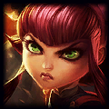
5
7
- 지옥불 챔피언이 스킬을 사용하거나 치명타 피해를 입힐 때마다 대상이 있는 지면을 불태워 4초 동안 해당 스킬이
약화되기 전 피해량의 1%에 해당하는 마법피해를 입힌다.
- (3): 1칸에 추가 피해량 +70%
- (6): 3칸에 추가 피해량 +150%
- (9): 5칸에 추가 피해량 +250%
빛
1
2
3
4
7
- 빛 챔피언이 처치당하면 다른 모든 빛 챔피언의 공격 속도가 증가하고 처치당한 챔피언의 초대 체력의 20%만큼 체력을 회복한다.
- (3): 공격 속도 +20%
- (6): 공격 속도 +30%
- (9): 공격 속도 +50%
사막
1
3
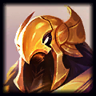
4
- 적의 방어력을 감소시킨다.
- (2): 방어력 40% 감소
- (4): 방어력 90% 감소
전기
1
2
5
7
- 전기 챔피언은 적에게 치명타 공격을 가하거나 받을 때마다 주변 적을 감전시킨다.
- (2): 피해량 80
- (3): 피해량 250
- (4): 피해량 550
빙하
1
2
3
4
7
- 빙하는 기본 공격 시 25% 확률로 대상을 1.5초 동안 기절시킨다.
- (2): 적 기절 시 75의 피해
- (4): 적 기절 시 175의 피해
- (6): 적 기절 시 375의 피해
숲
1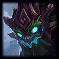
2
7
- (3): 전투 시작 시 무작위 숲 챔피언 하나가 자신과 동일한 복제 챔피언을 생성한다.
- (6): 모든 숲 챔피언을 복제 생성한다.
바다
1
2
3
5
7
- 4초마다 모든 아군의 마나가 회복된다.
- (2): 마나 +10
- (4): 마나 +30
- (6): 마나 +60
대지
1
3
4
- (2): 전투 시작 시 무작위 아군 하나가 1500의 피해를 막아주는 돌방패를 얻는다.
맹독
1
3
4 5
5
- (3): 맹독 챔피언이 피해를 입힐 때 신경독이 적용되어 대상이 사용하는 스킬의 마나 소모량을 33% 증가시킨다.
바람
2
3
4
7
- 모든 아군이 일정 확률로 적의 기본공격을 회피한다.
- (2): 회피 확률 20%
- (3): 회피 확률 25%
- (4): 회피 확률 35%
강철
2
3
7
- 강철 챔피언은 체력이 50% 아래로 내려가면 몇 초 동안 피해를 입지 않는다.
- (2): 피해 면역 2초
- (3): 피해 면역 3초
- (4): 피해 면역 4초
그림자
2
 3
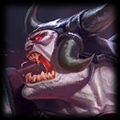
5
7
3
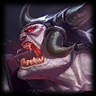
5
7
- 그림자 챔피언은 전투 시작 시 및 처치 관여 시 공격력이 5초 동안 증가한다.
- (3): 피해량 +65%
- (6): 피해량 +150%, 다른 그림자 챔피언이 처치 관여 시에도 초기화
달
1
3
- (2): 매 7초마다 아군의 치명타 확률이 15%, 치명타 피해량이 15% 그리고 주문력이 15%만큼 증가한다.
(이 효과는 최대 4회까지 중첩됩니다.)
직업
연금술사
5
- 고유: 연금술사는 다른 유닛을 통과해 이동할 수 있고, (모든 군중제어 효과를 전부 무시하면서)계속해서 이동한다.
아바타
7
- 고유: 대기석이나 전장에 아바타가 있으면 상점 내 모든 아바타의 계열 원소가 해당 아바타의 계열 원소로 바뀐다.
- (1): 특성 추가 효과에 대하여 아바타의 계열 원소는 두 번 적용됩니다.
광전사
1
2
3
4
- 고유: 전투 시작 시 광전사는 가장 가까이 있는 적에게 도약한다.
광전사는 일정 확률로 전방 원뿔 범위의 모든 적에게 피해를 입힐 수 있다.
이때 적중 시 효과가 적용된다.
- (3): 확률 45%
- (6): 확률 100%, 광전사 챔피언 공격력 +25
검사
2
3
5
- 검사는 기본 공격 시 40% 확률로 대상에게 추가 공격을 가한다. 추가 공격은 기본 공격과 같은 피해를 입히며 적중 시 효과가 적용된다.
- (2): 추가 공격 1회
- (4): 추가 공격 2회
- (6): 추가 공격 3회
소환사
1
2
3
4
5
- 소환된 유닛의 체력과 지속시간이 증가한다.
- (3): 체력 및 소환 지속시간 +30%
- (6): 체력 및 소환 지속시간 +120%
드루이드
1
2
- (2): 드루이드는 매초 45의 체력을 회복한다.
파수꾼
1
2
3
4
5
- 파수꾼의 총 방어력이 증가한다.
- (2): 방어력 +150%
- (4): 방어력 +300%
- (6): 방어력 +999%
 요술사
요술사
1
2
3
4
- 요술사는 일정 확률로 스킬을 두 번 사용할 수 있다.
- (3): 확률 50%
- (6): 확률 100%, 주문력 20증가
정찰대
1
2
3
4
- 정찰대는 3초마다 일정 확률로 다음 3초 동안 공격 속도가 두 배로 증가한다.
- (2): 35% 확률
- (4): 80% 확률
- (6): 100% 확률, 공격속도가 2.5배 증가
암살자
1
2
3
4
5
- 고유: 전투 시작 시 암살자는 가장 멀리 있는 적에게 도약한다.
암살자는 추가 치명타 피해량과 확률을 획득한다.
- (3): 치명타 피해 +70% 및 치명타 확률 +10% 증가
- (6): 치명타 피해 +210% 및 치명타 확률 +20% 증가
 신비술사
신비술사
3
4
5
- 모든 아군이 마법 저항력을 얻습니다.
- (2): 마법 저항력 +40
- (4): 마법 저항력 +120
포식자
1
2
- (3): 포식자는 체력이 25% 아래인 대상을 즉시 처치합니다.
영혼결속자
2
4
- (2): 라운드에서 먼저 처치당하는 영혼결속자 사망하지 않고 영혼 세계로 넘어가 대상으로 지정할 수 없는 상태가 되며,
다른 영혼 결속자가 살아있는 한 계속 싸운다.
시즌2 챔피언 코스트
1코스트
2코스트
 3코스트
3코스트
5코스트
7코스트
시즌3 : 별을 향한 귀환
은하계 체계
시즌3에 추가된 시스템.
공동 선택 단계의 정중앙 타일과 모니터, 상단 스테이지 정보창 등으로 어떤 은하계 체계인지 바로 확인할 수 있다.
빅뱅 은하계가 나올 확률은 20%,
일반(기본)을 포함한 나머지 특수 은하계가 나올 확률은 각각 10%이다.
은하계 종류
은하계의 종류는 15가지이며, 서로 각양각색한 특징을 갖고있다.
하지만 유저들의 경험으로 생긴 밸런스 문제와, 기능 문제 등으로 취소줄이 그어져 있는 은하계들은
패치를 겪으면서 없어진 은하계들이다.
꼬꼬마 전설이 : 성장기 전설이와는 반대로, 전설이의 크기가 작아지고 시작체력이 85가 된다.
- 우주 무기고 : 모든 플레이어가 동일하게 무작위 기본 아이템 3개를 가지고 시작한다.
니코의 세계 : 모든 유저가 니코의 도움 2개를 가지고 시작한다.
라일락 성운 : 첫 공동 선택 단계의 모든 캐릭터가 4코스트 챔피언들이다.
성장기 전설이 은하계 : 전설이의 크기가 커지고, 모든 유저의 체력이 +25 증가한다.
- 초밀도 은하계 : 모든 유저가 3스테이지 1라운드에서 대자연의 힘을 무료로 획득한다.
- 교환의 장 : 모든 유저가 라운드당 한 번 상점을 무료 교환할 수 있다.
- 보물창고 : 모든 미니언 및 몬스터가 전리품 구를 떨어뜨린다.
성단 : 공동 선택 라운드의 모든 1/2/3코스트 챔피언이 2성으로 등장한다.
두 개의 별 : 챔피언들이 최대 두개의 아이템만 장착할 수 있다.
왜행성 : 결투장의 맨 아래줄에 챔피언을 배치할 수 없으며 통과할 수도 없다. 즉 맵의 크기가 좁아지는 것이다.
행성 약탈 : 모든 챔피언이 죽을 때 확률적으로 골드를 떨어뜨리며 첫번째로 죽는 챔피언은 골드 드랍 확률이 늘어난다.
- 재활용의 세계 : 아이템을 가진 챔피언을 판매할 때 완성아이템이 기본 아이템으로 분리되어 떨어진다.
- 바다사자의 선물 : 모든 플레이어들이 뒤집개를 가지고 시작한다.
- 빅뱅 : 모든 플레이어가 라운드당 한 번 상점을 무료로 새로고침 할 수 있고 3스테이지가 시작될 때 대자연의 힘을 획득하며 모든 미니언과 몬스터가 전리품 구를 떨어뜨린다.
간단히 말해서
"교환의 장 + 초밀도 은하계 + 보물창고"
가 합쳐진 것이다.
예시
각 은하계 명칭은 첫 공동 선택 단계에서 출력되는 그림으로 알 수 있거나, 화면 상단 중앙에 어떤 은하계인지 메세지가 출력됨.
성장기 전설이 은하계에 관한 예시
니코의 세계에 관한 예시
초밀도 은하계에 관한 예시
사진처럼 대자연의 힘에 5가 적혀있는데,
5레벨 달성 시 대자연의 힘이 지급됨을 의미함.
시즌3 시너지
계열
메카 파일럿
2
3
4
- (3): 전투 시작 시 무작위 메카 파일럿 챔피언 셋이 슈퍼 메카로 합체한다.
반군
1
2
3
4
5
- 전투 시작 시 반군은 주변에 있는 반군의 수에 따라 보호막을 얻고 입히는 피해량이 증가한다.
보호막은 8초 동안 지속된다.
- (3): 보호막 150 및 피해량 10%
- (6): 보호막 225 및 피해량 12%
- (9): 보호막 400 및 피해량 20%
별 수호자
1
2
3
4
5
- 별 수호자는 스킬 사용 시 다른 별 수호자들에게 마나를 부여한다. 서로에게 적용된다.
- (3): 총 마나 15
- (6): 총 마나 25
- (9): 총 마나 60
사이버네틱
1
2
3
4
5
- 사이버네틱 챔피언은 하나 이상의 아잍메(기본 또는 조합 아이템)을 장착하면 체력과 공격력을 얻는다.
- (3): 체력 300 및 공격력 35
- (6): 체력 550 및 공격력 70
시공간
1
 2
4
5
5
2
4
5
5
- 몇 초에 한 번씩 모든 아군의 공격 속도가 15% 증가한다.
- (2): 8초
- (4): 3초
- (6): 1초
- (8): 0.50초
암흑의 별
1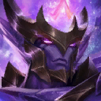
2
3
4
5
- 아군 챔피언이 죽으면 모든 암흑의 별 챔피언의 공격력 및 주문력이 증가한다.
- (2): 공격력 및 주문력 +8
- (4): 공격력 및 주문력 +18
- (6): 공격력 및 주문력 +28
- (8): 공격력 및 주문력 +48
우주 해적
1
2
3
5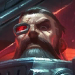
- 우주 해적이 챔피언에게 마무리 일격 시 일정 확률로 아이템이 추가로 떨어진다.
- (2): 50% 확률로 1골드 획득
- (4): 50% 확률로 1골드 및 33% 확률로 조합 아이템 획득
우주비행사
2
3
4
- (3): 우주비행사 챔피언은 소모 마나가 30 감소한다.
전투기계
1
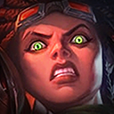
2
3 4
5
4
5
- 전투 기계 챔피언은 피해를 10회 입거나 입힌 후 가장 가까운 적에게 마법 피해를 입힌다.
체력이 절반보다 낮으면 피해를 입히지 않고 체력을 회복한다.
- (2): 회복량 또는 피해량 80
- (4): 회복량 또는 피해량 180
- (6): 회복량 또는 피해량 480
- (8): 회복량 또는 피해량 1000
천상
1
2
3
5
- 모든 아군이 스킬과 기본 공격으로 입히는 피해량 중 일부만큼 체력을 회복한다.
- (2): 회복량 15%
- (4): 회복량 45%
- (6): 회복량 150%
직업
검사
1
2
3
4
- 검사는 기본 공격 시 일정 확률로 대상에게 두 번의 추가 공격을 가한다.
추가 공격은 기본 공격 시의 피해를 입히며 적중 시 효과가 적용된다.
- (3): 추가 공격 확률 30%
- (6): 추가 공격 확률 65%
- (9): 추가 공격 확률 100%
마나 약탈자
2
4
5
- (2): 마나 약탈자의 기본 공격은 대상의 다음 스킬 마나 비용을 30% 증가시킨다.
마법사
1
2
3
4
5
- 모든 아군의 주문력이 증가한다.
- (2): 주문력 20%
- (4): 주문력 40%
- (6): 주문력 70%
 선봉대
선봉대
1
2
3
4
- 선봉대 챔피언은 추가 방어력을 얻는다.
- (2): 방어력 125
- (4): 방어력 300
- (6): 방어력 900
수호자
1
2
3
5
- 수호자는 스킬을 사용할 때마다 4초동안 보호막을 얻는다. 이 보호막은 중첩되지 않는다.
- (2): 최대 체력의 30%만큼 보호막
- (4): 최대 체력의 40%만큼 보호막
- (6): 최대 체력의 50%만큼 보호막
신비술사
3
4
5
- 모든 아군이 마법 저항력을 얻는다.
- (2): 마법 저항력 50
- (4): 마법 저항력 120
싸움꾼
1
2
3
4
- 싸움꾼은 추가 최대 체력을 얻는다.
- (2): 추가 체력 350
- (4): 추가 체력 600
용병
5
- 고유: 용병은 상점에서 스킬을 업그레이드 할 수 있다.
우주선
5
- 고유: 우주선은 매초 마나를 40씩 획득하며 전장 주위를 돈다. 이동 방해 효과에 면역이지만,
기본 공격은 할 수 없다.
인도자
5
- (1): 아군 별 수호자의 기본 공격이 고정 피해를 입힌다. 다른 모든 아군들의 기본 공격은 마법 공격을 입힌다.
잠입자
1
2
3
4
5
- 고유: 전투 시작 시 잠입자는 적의 후방으로 이동한다.
전투 시작 시 잠입자의 공격 속도가 6초 동안 증가한다.(처치 관여 시 초기화)
- (2): 추가 공격 속도 40%
- (4): 추가 공격 속도 80%
- (6): 추가 공격 속도 150%
저격수
1
3
4
- (2): 저격수와 대상 사이에 놓인 칸 하나당 해당 저격수가 입히는 피해량이 9% 증가한다.
- (4): 저격수와 대상 사이에 놓인 칸 하나당 해당 저격수가 입히는 피해량이 16% 증가한다.
총잡이
1
2
3
4
- 총잡이는 네 번째 기본 공격마다 무작위 적에게 추가 공격을 가한다. 추가 공격은 기본 공격과 같은 피해를 입히고
적중 시 효과가 적용되며, 치명타가 적용될 수 있다.
- (2): 추가 공격 3회
- (4): 추가 공격 6회
폭파광
1
3
5
- (2): 폭파광에게 스킬 피해를 입은 대상은 1.50초 동안 기절한다.(스킬 사용당 1회)
시즌3 챔피언 코스트
1코스트
2코스트


4코스트
5코스트
시즌4 : 야수의 축제
선택받은 자
시즌 4의 핵심 시스템.
일정 확률로 상점에 분홍색으로 빛나는 챔피언이 등장하는데, 이 챔피언은 구입할 때부터 2성으로 시작하며 특정한 추가 능력치를 얻고
표기된 계열/직업 중 하나가 두 번 중첩된다. 대신 구매 가격도 1성 챔피언의 3배이다.
선택받은 자 챔피언은 플레이어 당 하나만 가질 수 있으며, 구매 가능 여부는 상점 목록 잠금 아이콘 옆에 있는 운명 아이콘으로 확인가능하다.
선택받은 자는 기본적으로 체력이 200 증가하고, 챔피언에 따라 추가 능력치 하나를 얻는다.
선택받은 자
체략 300 증가 챔피언 목록

주문력 15 증가 챔피언 목록
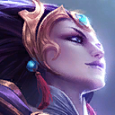


공격력 10 증가 챔피언 목록
마나 소모량 15% 감소 챔피언 목록
시즌4 시너지
계열
광신도
1
2
3
4
5
아군이 50%의 체력을 잃으면 갈리오가 나타나 가장 많은 적이 모여 있는 지점에 착지해 적들을 공중에 띄운다.
활성화된 모든 광신도의 전체 별 등급에 따라 갈리오의 힘이 증가한다.
- (3) 폭군 갈리오
- (6) 악마의 군주 갈리오
- (9) 절대 지배자 갈리오
나무정령
1
2
3
4
5
2초마다 모든 나무정령 챔피언이 자라나며 추가 능력치를 얻는다.
이 효과는 최대 5번까지 중첩된다.
- (3) 방어력 및 마법 저항력 15, 공격력 및 주문력 5
- (6) 방어력 및 마법 저항력 20, 공격력 및 주문력 10
- (9) 방어력 및 마법 저항력 30, 공격력 및 주문력 15
닌자
2
3
4
닌자는 추가 공격력과 주문력을 얻는다.
이 특성은 닌자가 정확히 하나 또는 각기 다른 닌자가 넷 있을 때 활성화된다.
- (1) 닌자 유닛 공격력 +50, 주문력 +50%
- (4) 모든 닌자 유닛 공격력 +140, 주문력 +140%
대장군
1
2
3
4
5
대장군은 추가 체력 및 주문력을 얻는다. 전투에 참여해 승리할 때마다 추가 능력치가 10% 증가한다.
이 효과는 최대 5번까지 중첩된다.
- (3) 추가 체력 250, 추가 주문력 25
- (6) 추가 체력 400, 추가 주문력 40
- (9) 추가 체력 700, 추가 주문력 70
무모한 자
5
무모한 자는 전투의 전율을 추구하며 두 번 공격할 때마다 돌진한다.
돌진한 후에는 최대 체력의 10%만큼 피해를 흡수하는 보호막을 얻으며 다음 기본 공격 시 2발을 발사하고 스타일을 얻는다.
스타일이 최대로 쌓이면 스킬을 사용한다.
선지자
1
2
3
4
선지자는 마나를 추가로 회복한다.
- (2) 마나 회복 50% 증가
- (4) 마나 회복 100% 증가
- (6) 마나 회복 150% 증가
신성
1
2
3
4
5
6회 공격하거나 체력이 50% 아래로 떨어지면 신성 챔피언이 모든 군중 제어 효과를 제거하고 초월하여 6초 동안
받는 피해량이 감소하고 추가 고정피해를 입힌다.
- (2) 피해량 감소 25% 및 고정 피해 25%
- (4) 피해량 감소 40% 및 고정 피해 40%
- (6) 피해량 감소 55% 및 고정 피해 55%
- (8) 피해량 감소 70% 및 고정 피해 70%
 영혼
영혼
1
2
3
영혼이 처음 스킬을 사용하면 모든 아군의 공격 속도가 증가한다.
(2) 공격 속도 18%
(4) 공격 속도 30%
용의 영혼
1
2
3
4
5
최초 피해를 입은 용의 영혼 아군은 용의 축복을 받습니다.
해당 유닛은 추가 능력치를 획득하고 5번째 공격마다 용의 영혼을 폭발시켜 대상 최대 체력 40%의 마법 피해를 입힌다.
사망 시 축복은 축복이 없던 용의 영혼 중 가장 가까운 아군에게 전달된다.
- (3) 축복 1, 공격 속도 및 주문력 +40
- (6) 축복 3, 공격 속도 및 주문력 +70
- (9) 축복 6, 공격 속도 및 주문력 +140
우두머리
5
우두머리의 체력이 처음으로 40% 이하로 내려가면, 전투에서 벗어나 윗몸일으키기를 한다.
윗몸일으키기를 할 때마다 최대 체력의 15%를 회복하고 공격 속도와 이동 속도가 40% 증가한다.
체력을 모두 회복하면 강화된 상태로 전투에 복귀하며, 기본 공격과 스킬이 고정 피해를 입힌다.
모든 아군이 처치되면 전투에 즉시 복귀한다.
우화
2
3
4
(3) 우화 챔피언의 스킬은 과거의 무용담으로 강화된다.
추방자
1
5
전투 시작 시 추방자 주변에 아군이 없다면 다음의 효과를 얻는다.
(1) 최대 체력 50%에 해당하는 피해를 흡수하는 보호막
(2) 생명력 흡수 80%
행운
1
2
3
4
(3) 플레이어를 상대로 전투에서 승리하면 보너스 구체를 얻는다. 구체를 얻지 못한 라운드가 많을수록 더 큰 보상을 획득한다.
(6) 승리 시 희귀한 전리품이 포함된 보너스 구체를 1개 더 얻는다.
직업
결투가
1
2
3
4
5
고유 - 결투가는 추가 이동 속도를 얻는다.
결투가는 기본 공격을 할 때마다 공격 속도가 증가한다. 이 효과는 최대 8번까지 중첩된다.
(2) 중첩당 공격 속도 +12%
(4) 중첩당 공격 속도 +20%
(6) 중첩당 공격 속도 +35%
(8) 중첩당 공격 속도 +60%
귀감
1
2
3
4
5
전투 시작 시 귀감 챔피언은 자신과 인접한 모든 아군에게 지속시간 동안 보호막을 부여한다.
귀감 챔피언에게 적용된 보호막은 50% 더 많은 피해를 흡수한다.
(2) 보호막 150, 8초
(4) 보호막 200, 10초
(6) 보호막 250, 12초
대장장이
5
(1) 대장장이는 전투에 참여할 때마다 유물 아이템을 제작하기 시작한다.
챔피언 별 등급이 높을수록 제작 속도가 빠르다.
유물이 완성되면 아군에게 부여할 수 있다.
아군 하나당 한 개의 유물만 장착할 수 있다.
명사수
1
2
3
5
명사수의 기본 공격 및 스킬은 주벽 적들에게 튕기며 감소된 피해를 입힌다.
(2) 2회 튕기며 65% 감소된 피해
(4) 3회 튕기며 45% 감소된 피해
(6) 4회 튕기며 30% 감소된 피해
 선봉대
선봉대
1
2
4
5
선봉대 챔피언은 추가 방어력 및 마법 저항력을 얻는다.
(2) 방어력 100 및 마법 저항력 10
(4) 방어력 250 및 마법 저항력 25
(6) 방어력 500 및 마법 저항력 50
(8) 방어력 1000 및 마법 저항력 80
신비술사
2
3
4
5
(2) 마법 저항력 40
(4) 마법 저항력 120
(6) 마법 저항력 300
 싸움꾼
싸움꾼
1
2
3
4
5
(2) 체력 400 및 공격력 10
(4) 체력 700 및 공격력 20
(6) 체력 1000 및 공격력 40
(8) 체력 1400 및 공격력 80
암살자
1
2
3
4
고유 - 전투 시작 시 암살자는 적의 후방으로 도약한다.
암살자는 추가 치명타 피해량과 확률을 획득하며, 스킬에 치명타가 적용될 수 있다.
(2) 치명타 피해량 +25%, 치명타 확률 +10%
(4) 치명타 피해량 +55%, 치명타 확률 +30%
(6) 치명타 피해량 +90%, 치명타 확률 +50%
요술사
1
2
3
4
요술사는 스킬을 두 번 사용하고 주문력이 조정된다.
(3) 모든 요술사 주문력 총합의 80%
(5) 모든 요술사 주문력 총합의 105%
(7) 모든 요술사 주문력 총합의 130%
조율자
3
4
5
전투 시작 시 조율자는 전투의 흐름을 진정시켜 모든 적의 공격 속도를 50% 감소시킨다.
(2) 전투 시작 후 2초
(3) 전투 시작 후 3.5초
(4) 전투 시작 후 6초
처형자
3
4
처형자는 체력이 일정 비율 아래인 대상에게 기본 공격 또는 스킬 사용 시 항상 치명타가 적용된다.
(2) 체력이 33% 밑으로 떨어진 적에게 치명타 적용
(3) 체력이 66% 밑으로 떨어진 적에게 치명타 적용
(4) 체력이 99% 밑으로 떨어진 적에게 치명타 적용
학살자
2
3
4
5
학살자는 체력이 낮을 때 강화되는 생명력 흡수 효과를 얻으며 대상의 잃은 체력에 비례해 추가 피해를 입힌다.
(3) 생명력 흡수 15~30% 및 추가 피해 20~45%
(6) 생명력 흡수 30~60% 및 추가 피해 35~80%
황제
5
(1) 황제는 전장의 원하는 위치에 2명의 모래 병사를 배치한다.
모래 병사는 움직이거나 공격할 수 없으며, 황제가 처치되면 사라진다.
흡수자
1
2
4
5
모든 아군이 스킬과 기본 공격으로 입히는 피해량 중 일부만큼 체력을 회복한다.
(2) 아군 10%, 흡수자 40%
(4) 아군 25%, 흡수자 100%
시즌4 챔피언 코스트
1코스트
4코스트
시즌5 : 영웅의 여명
그림자 아이템과 찬란한 아이템,
무기고 시스템.
시즌 5의 핵심이다.
시즌 5는 그림자 아이템이,
시즌 5.5는 찬란한 아이템이 등장했다.
무기고는 2-2와 4-2에서 확정적으로, 5-2. 5-2. 7-2에서는 일정 확률로 등장하며 상자 아이콘이 떠 있는 라운드가 시작할 때마다
추가로 아이템을 획득할 수 있다.
아이템은 무작위로 여러 개가 떠오르며 그 중 하나를 선택해서 획득한다.
시즌 5.5 기준 3-6 라운드에서는 찬란한 아이템을 선택할 수 있는 전용 무기고가 등장한다.
11.20 패치 이후부터는 5-1 라운드에 한번 더 열린다.
5.5 시즌에서는 '특성의 고서'가 추가되었다.
얻으면 챔피언처럼 대기석에 놓이게 되며, 판매하면 무작위 특성 아이템들로만 이루어진 전용 무기고를 열 수 있다.
5.5 시즌에서는 체력이 40 이하가 된 플레이어는 다음 라운드가 시작할 때 신성의 축복이라는 날개 달린 황금색 구체를 획득할 수 있다.
구체에서는 대량의 골드나 아이템이 나오며, 낮은 확률로 특성의 고서도 획득할 수 있다. 구체 보상은 매 판마다 다르지만,
한 게임 내에세는 모든 플레이어가 동일한 보상을 획득한다.
그림자 아이템은 기본적으로 일반 아이템에 비해 성능이 극대화된 반면에,
그만큼의 패널티가 주어지는 아이템들이 있다. 그림자 아이템을 만들기 위해선,
일반 재료 아이템 + 그림자 재료 아이템
그림자 재료 아이템 + 그림자 재료 아이템
으로 그림자 완성 아이템을 제작할 수 있다.
그림자 아이템은 일반 아이템과 마찬가지로 크립라운드나 드래프트 픽에서 얻거나, 무기고에서 얻을 수 있다.
그림자 완성 아이템 종류와 효과
그림자
아이템 |
효과 |
지옥
바라기 |
물리 피해를 입힐 경우 피해량의 40%만큼 체력 회복. 체력이 90%까지 회복될 때마다 4초 동안 공격 속도 30% 상승. 전투 시작 시 최대 체력의 25%에 해당하는 고정 피해 입음 |
암흑의
푸른
파수꾼 |
[고유] 스킬 시전 후, 15의 마나 회복. 체력이 60% 이하일 경우 50의 마나 회복. |
구부러진
덤불
조끼 |
추가 방어력 200 (조합 아이템 포함) |
악의의
성배 |
전투 시작 시 가로로 1칸 내에 있는 모든 아군의 주문력이 40만큼 전투가 끝날 때까지 증가. 장착 유닛은 주문력이 증가하지 않으며 20 감소. |
부식성
죽음의
검 |
적 처치 관여 시마다 전투가 끝날 때까지 공격력 +15 증가. 무제한 중첩 가능. (4중첩부터 시작)최대 체력 -20% 감소. |
구부러진
용의
발톱 |
받는 마법 피해 15% 감소. 받는 치명타 공격의 추가 피해 무효화 |
암흑의
힘 |
최대 팀 인원 수가 +2 증가하지만, 전투에서 패배 시 플레이어의 꼬마 전설이가 받는 피해 +100% 증가 |
얼어붙은
검은
심장 |
[고유] 2칸 내에 있는 모든 적의 공격 속도 35% 감소.
장착 유닛을 제외한 1칸 내에 있는 모든 아군의 공격 속도 35% 감소. |
불멸의
가고일
돌갑옷 |
장착 유닛이 자신을 대상으로 지정한 적 유닛 하나당 2초마다 체력 45씩 회복 |
유령
거인
학살자 |
대상 최대 체력이 1100 초과 시 기본 공격 및 스킬로 50%의 추가 피해 |
타락한
수호
천사 |
[고유] 처음 사망 시 2초 동안 경직된 후 해로운 효과가 사라지고 70%의 체력을 지닌 채 부활. 부활 후 전투가 끝날 때까지 공격 속도 50% 감소. |
구인수의
제물
격노검 |
기본 공격 시 전투가 끝날 때까지 공격 속도 +9% 증가. 무제한 중첩 가능. 공격을 가할 때마다 최대 체력의 2.5%만큼 장착 유닛이 고정 피해 받음. |
복수의
손길 |
전투 시작 시 다음 효과 획득:
- 공격력 +40 및 주문력 +40
- 기본 공격과 스킬 사용 시 피해량의 40%만큼 체력 회복
위 효과는 처치 관여 후 만료되며 다음 처치 관여 시 다시 획득
|
불멸의
마법공학
총검 |
스킬로 마법 및 고정 피해를 입히면 남은 체력 비율이 가장 낮은 아군의 체력을 피해량의 60%만큼 회복. 장착 유닛의 체력은 회복되지 않음 |
무한의
제물
대검 |
[고유] 치명타 확률 +75% 증가. (조합 아이템에도 적용) 치명타 확률이 100%가 되면 1% 증가할 때마다 치명타 피해량 +1% 증가. 또한 치명타 피해량 30% 증가. 공격하거나 스킬을 사용할 때마다 최대 체력의 3%에 해당하는 고정 피해 |
암흑
이온
충격기 |
장착 유닛을 제외하고, 스킬을 사용하는 2칸 내 적 및 아군에게 최대 마나 비례 마법 피해. 적에게는 최대 마나의 200%, 아군에게는 최대 마나의 50%에 해당하는 피해. 아군 또는 적이 피해를 입을 때마다 주문력 10 증가. 이 효과는 전투가 끝날 때까지 지속 |
제물
건틀릿 |
치명타 피해량 40% 증가 및 스킬의 마법 및 고정 피해에 치명타 적용 가능. 각 전투에서 스킬 첫 사용 시 전투가 끝날 때까지 치명타 확률 20% 추가 획득. (이 효과는 해당 스킬 사용 시 적용) 스킬을 사용할 때마다 장착 유닛에게 등급에 따라 배로 늘어나는 최대 마나의 100%에 해당하는 고정 피해 |
마지막
속삭임 |
치명타 공격을 가할 경우 5초 동안 대상의 방어력 및 마법 저항력 70% 감소. 장착 유닛의 방어력과 마법 저항력 역시 영구적으로 25% 감소 |
은빛
루나리
펜던트 |
전투 시작 시 장착 유닛과 가로로 2칸 내에 있는 모든 아군의 방어력과 마법 저항력이 60 증가하는 대신 기본 공격 1회당 회복하는 마나 5 감소 |
대악마의
불멸
지팡이 |
스킬을 사용할 때마다 최대 마나의 350%만큼 최대 체력 증가. 이후 증가한 체력 만큼 체력 회복 |
데블로노미콘 |
[고유] 스킬로 마법 피해를 입히면, 대상을 불태워 25초 동안 최대 체력의 100%만큼 고정 피해를 입히고 그 동안 모든 체력 회복 효과 50% 감소
장착 유닛이 스킬로 입히는 피해량 50% 감소 |
부식성
수은 |
[고유] 전투가 끝날 때까지 군중 제어 효과에 면역. 최대 체력 -20% 감소 |
라바돈의부식성죽음모자 |
추가 주문력 100 (조합 아이템 포함) 획득 및 최대 체력 -20% 감소. |
고속
사망포 |
공격 사거리 1칸 증가. 추가로 2칸 내에 적이 없다면 추가 공격 속도 +40% 증가
공격이 빗나가지 않음 |
제물로
바친
구원 |
오오라를 발산해 장착 유닛을 제외한 전장의 모든 아군의 체력을 5초마다 잃은 체력의 25%만큼 회복. 이 효과로 아군이 체력을 회복할 때마다 장착 유닛에게 현재 체력의 5%만큼 고정 피해 |
루난의
길들지
않은
허리케인 |
기본 공격 시 주변 2명의 적에게 탄환을 발사하여 공격력의 50%만큼 피해. 추가 탄환에는 치명타가 적용될 수 있지만, 적중 시 효과는 적용되지 않음 |
침묵의
흑막 |
[고유] 전투 시작 시 전방과 후방으로 광선을 발사해 적중당한 적과 다른 아군의 최대 마나를 65% 증가시켜 첫 스킬 사용 지연 |
망령
쇼진의
창 |
기본 공격 시 14의 추가 마나 회복. 입히는 피해량 15% 감소 |
스태틱의
단도 |
두 번째 공격마다 연쇄 번개를 발사하여 4명의 적에게 70의 마법 피해를 입히고 대상의 마법 저항력을 5초 동안 50%감소
장착 유닛의 공격력 -33% 감소. |
일식의
망토 |
[고유] 1.5초마다 3칸 내에 있는 무작위 적 하나가 불타 10초 동안 최대 체력의 25%에 해당하는 고정 피해를 입고 체력 회복 효과 50% 감소. 장착한 챔피언 역시 8초 동안 불타 최대 체력의 25%에 해당하는 고정 피해를 입고 체력 회복 효과 50% 감소 |
사기꾼의
장갑 |
매 준비 단계마다 완성된 그림자 아이템 2개 일시 획득.
[아이템 슬롯 3개 차지] |
거인의
복수 |
3초마다 다음 기본 공격 시 마지막으로 공격을 강화한 후 입은 총 피해의 20%만큼 고정 피해 |
밴시의
발톱 |
[고유] 전투 시작 시 장착한 유닛과 가로로 1칸 내에 있는 모든 아군이 처음 적중한 적 스킬을 막는 보호막 획득 |
워모그의
제물
갑옷 |
추가 체력 1800 획득 (조합 아이템 적용). 장착 유닛에게 매초 60의 고정 피해 |
지크의
음산한
정령 |
전투 시작 시 장착 유닛으로부터 가로로 1칸 내에 있는 모든 아군의 공격 속도 20% 감소. 영향을 받은 아군 하나마다 장착 유닛의 공격 속도 40% 증가 |
사나운
서풍 |
[고유] 전투 시작 시 결투장 반대편에 회오리바람을 소환해 회오리바람과 가장 가까운 적을 8초 동안 전투에서 제외. 적이 전투에 복귀하면 해당 적이 전투가 끝날 때까지 공격력과 주문력 30 획득. 군중 제어 효과 면역 무시 |
불안정한
즈롯
차원문 |
전투 시작 시 장착한 유닛이 2칸 내에 있는 적을 도발
장착 유닛 사망 시 500의 체력을 지닌 불안정한 공허생물이 깨어나 적들을 다시 도발. 공허 생물은 사망하면서 1칸 내 적들에게 500의 고정 피해
소환된 유닛에서 일어난 공허 생물의 효과가 50% 증가 |
시즌5 시너지
계열
감시자
1
2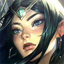
3
4
5
전투 시작 시 아이템이 가장 많은 감시자가 보호막을 얻는다.
해당 감시자가 여럿이면 그 중 공격 속도가 가장 높은 감시자로 결정된다.
보호막이 사라지거나 파괴되면 남은 체력 비율이 가장 낮은 아군에게 보호막이 넘어가며 초기화된다.
아군은 이 보호막을 얻을 때마다 공격 속도가 증가한다. 추가 공격 속도는 보호막이 넘어가도 유지된다.
(3) 보호막 175, 공격속도 +25%, 지속시간 4초
(6) 보호막 900, 공격속도 +90%, 지속시간 2초
(9) 보호막 2000, 공격속도 +500%, 지속시간 1초
 괴생명체
괴생명체
1
2
3
4
아군 챔피언이 2명 사망하면 괴수가 무덤에서 깨어난다.
괴수는 스테이지 단계와 아군 괴생명체 챔피언의 별 등급에 따라 추가 체력 및 공격력을 얻는다.
괴수는 전투 시작 시 무덤에서 가까운 괴생명체 챔피언 3명의 아이템을 무작위로 하나씩 복사해 보유한다.
(3) 체력 900, 공격력 70
(4) 체력 1400, 공격력 80
(5) 체력 1900, 공격력 90
구원받은 자
1
2
3
4
5
구원받은 자 챔피언의 방어력, 마법 저항력, 주문력이 증가한다.
사망 시 해당 추가 능력치는 남아있는 구원받은 자 아군이 나눠 받는다.
(3) 방어력 및 마법 저항력 +20, 주문력 +20%
(6) 방어력 및 마법 저항력 +35, 주문력 +35%
(9) 방어력 및 마법 저항력 +75, 주문력 +75%
망각
1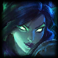
2
3
4
5
망각 챔피언은 추가 공격력 및 주문력을 얻는다.
전투에 참여해 승리할 때마다 추가 능력치가 10% 증가한다.
이 효과는 최대 5번까지 중첩된다.
(2) 공격력과 주문력 20
(4) 공격력과 주문력 40
(6) 공격력과 주문력 70
(8) 공격력과 주문력 200
망령
3
4
5
망령은 매 전투에서 처음 사망 시 부활한다.
부활 후 받는 피해와 입히는 피해가 25% 증가한다.
(2) 10%의 체력을 지닌 채 부활
(3) 25%의 체력을 지닌 채 부활
(4) 45%의 체력을 지닌 채 부활
(5) 70%의 체력을 지닌 채 부활
무생물
5
(1) 전투 시작 시 무생물 챔피언은 8초 동안 해로윙 안개를 모든 인접 칸에 소환한다.
안개 속에서는 모든 아군이 입는 피해량이 33% 감소한다.
빛의 인도자
1
2
3
4
5
빛의 인도자는 처음으로 체력이 50% 이하로 떨어지면 최대 체력에 비례에 빠르게 체력을 회복한다.
이후 모든 아군 빛의 인도자는 10% 증가된 피해를 입힌다.
(2) 최대 체력의 30%
(4) 최대 체력의 55%
(6) 최대 체력의 80%
(8) 최대 체력의 120%
승리자
5
(1) 승리자 챔피언은 상대 유닛을 처치하면, 다음 기본 공격이 강화되어 대상의 잃은 체력의 40%에
해당하는 추가 마법 피해를 입힌다.
악동
1
2
3
5
악동은 공격 속도를 얻는다.
악동이 죽을 때마다 별 등급이 하나 낮은 분신이 악동 차원문을 통해 등장해 전투에 참여한다.
(2) 공격 속도 10%
(4) 공격 속도 30%
(6) 공격 속도 80%
(8) 공격 속도 140%
어둠의 인도자
1
2
3
 4
4
어둠의 인도자는 처음으로 체력이 50% 이하로 떨어지면 8초 동안 최대 체력에 비례해 피해를 흡수하는 보호막을 얻는다.
이후 해당 어둠의 인도자는 추가 피해를 입힌다.
(2) 30% 보호막, 20% 추가 피해
(4) 60% 보호막, 30% 추가 피해
(6) 90% 보호막, 40% 추가 피해
(8) 200% 보호막, 70% 추가 피해
용족
1 2
3
4
5
2
3
4
5
(3) 플레이어 전투가 끝날 때마다 대기석에 용의 알 하나가 생성된다.
알의 크기가 클수록 부화에 필요한 시간도 길어지며, 그만큼 더 희귀한 보상이 주어진다.
(6) 황금 용의 알이 생성된다. 황금 용의 알 안에는 더욱 희귀한 보상이 들어있다.
초고속 모드에서는 용의 알이 훨씬 더 빨리 부화한다.
 철갑
철갑

(2) 방어력 +30
(3) 방어력 +70
(4) 방어력 +125
직업
군단
1
2
3
4
5
군단은 추가 공격 속도를 얻으며 기본 공격과 스킬로 입힌 피해량의 일부를 체력으로 회복한다.
(2) 공격 속도 +25%, 회복량 15%
(4) 공격 속도 +65%, 회복량 20%
(6) 공격 속도 +120%, 회복량 25%
(8) 공격 속도 +250%, 회복량 35%
극악무도
5
(1) 극악무도 챔피언은 홀로 단 1명의 적을 상대하기만을 학수고대한다.
극악무도 챔피언은 골드 대신 꼬마 전설이 체력으로 구매해야 한다.
판매할 경우 체력이 아닌 골드를 받는다.
기병대
1
2
4
고유 - 기병대는 이동할 때마다 대상에게 빠르게 돌격한다.
기병대는 받는 피해량이 감소한다. 전투 시작 및 돌격 이후 4초 동안 이 효과가 두 배로 증가한다.
(2) 받는 피해량 감소 20%
(3) 받는 피해량 감소 25%
(4) 받는 피해량 감소 30%
기사
1
2
4
5
모든 아군이 모든 공격으로부터 받는 피해를 고정된 수치만큼 막는다.
(2) 피해 흡수량 20
(4) 피해 흡수량 40
(6) 피해 흡수량 70
기원자
2
4
5
모든 아군이 기본 공격 시 추가 마나를 얻는다.
(2) 마나 +3
(4) 마나 +6
 신비술사
신비술사
3
4
5
(2) 마법 저항력 +40
(3) 마법 저항력 +80
(4) 마법 저항력 +150
(5) 마법 저항력 +250
싸움꾼
1
2
3
5
(2) 체력 +400
(4) 체력 +1000
(6) 체력 +1600
 암살자
암살자
1
2
3
4
5
고유 - 전투 시작 시 암살자는 적의 후방으로 도약한다.
암살자는 추가 치명타 피해량과 확률을 획득하며, 스킬에 치명타가 적용될 수 있다.
(2) 치명타 확률 +20%, 치명타 피해량 +30%
(4) 치명타 확률 +40%, 치명타 피해량 +40%
(6) 치명타 확률 +75%, 치명타 피해량 +50%
용 사육사
5
(1) 조련사는 새끼 용을 배치한다. 새끼용은 조련사의 100%만큼에 해당하는 공격 속도를 얻고, 새끼 용이 사망 시 조련사가 80의 마나를 회복한다.
재생술사
1
2
3
4
5
재생술사는 매초 최대 체력의 일정 비율만큼 체력을 회복한다.
체력이 가득 차면, 체력 대신 마나를 회복한다.
(2) 체력 4% 또는 마나 4%
(4) 체력 7% 또는 마나 7%
(6) 체력 10% 또는 마나 10%
 정찰대
정찰대
1
2
3
4
5
정찰대는 4초마다 4초 동안 지속되는 추가 공격 속도를 얻는다.
이 효과는 전투 시작 4초 후에 발동된다.
(2) 공격 속도 +80%
(4) 공격 속도 +180%
(6) 공격 속도 +400%
주문술사
1
2
3
4
전투가 끝날 때까지 챔피언이 스킬을 사용할 때마다 주문술사가 추가 주문력을 얻는다.
(2) 주문력 25, 추가 주문력 2
(4) 주문력 55, 추가 주문력 5
(6) 주문력 100, 추가 주문력 10
 척후병
척후병
1
2
3
4
5
척후병은 전투 시작 시 보호막을 얻고 매초 추가 공격력이 증가한다.
(3) 최대 체력의 20%에 해당하는 보호막, 공격력 +3
(6) 최대 체력의 50%에 해당하는 보호막, 공격력 +8
(9) 최대 체력의 100%에 해당하는 보호막, 공격력 +16
포병대
1
2
3
4
포병대는 매 5번째 기본 공격으로 포탄을 발사한다.
포탄은 대상의 위치에서 폭발하여 피해량의 일부를 주변 적에게 물리 피해로 입힌다.
(2) 피해량의 225%
(4) 피해량의 450%
(6) 피해량의 1200%
시즌5 챔피언 코스트
1코스트
2코스트
3코스트
4코스트
5코스트
시즌6 : 기계와 장치
마법공학 증강체
시즌 6의 핵심 시스템.
전 시즌의 무기고처럼 특정 라운드마다 선택창이 여러 개 떠오르고 그 중 하나를 골라서 조합을 강화시킬 수 있다.
아이템만 나왔던 무기고와 다르게 마법공학 증강체는 기본적으로 조합 전체에 상시 적용되는 효과 그 자체인 경우가 많다.
물론 이전 시즌에서처럼 단순히 아이템을 제공하는 증강체도 있고, 이전까지는 볼 수 없었던 플레이어의 레벨이나
이자에 직접적으로 관여하는 색다른 증강체들도 있다.
다양한 효과의 증강체들을 잘 조합하면 활성화된 특성은
동일하지만 더 강하고 개성적인 조합을 만드는 것이 가능하다.
게임별 증강체 순서 결정 확률
| 실버 - 실버 - 골드 |
30% |
| 실버 - 실버 - 프리즘 |
9% |
| 실버 - 골드 - 골드 |
15% |
| 실버 - 골드 - 프리즘 |
4% |
| 실버 - 프리즘 - 실버 |
4% |
| 골드 - 실버 - 실버 |
10% |
| 골드 - 실버 - 골드 |
10% |
| 골드 - 실버 - 프리즘 |
4% |
| 골드 - 골드 - 골드 |
4% |
| 골드 - 골드 - 프리즘 |
4% |
| 프리즘 - 실버 - 골드 |
2% |
| 프리즘 - 실버 - 프리즘 |
1% |
| 프리즘 - 골드 - 골드 |
2% |
| 프리즘 - 프리즘 - 프리즘 |
1% |
증강체 정보 확인하기
1단계 마법공학 증강체
| 증강체 명 |
기능 |
계산된 패배 |
전투에서 패배한 후 2골드와 무료 상점 새로고침 1회를 획득한다. |
고대의 기록 보관소 |
특성의 고서 1개를 획득한다. |
지배 |
플레이어 전투에서 승리한 후 살아남은 유닛 2명당 추가 1골드를 획득한다. |
아이템 꾸러미 Ⅰ |
무작위 완성 아이템 1개를 획득한다. |
허수아비 전선 |
2개의 훈련 봇을 획득한다. |
초고속 모드 |
라운드 종료 시 가진 골드가 10보다 적다면 2골드를 획득한다. |
판도라의 아이템 |
무작위 조합 아이템을 획득한다.
라운드 시작 시 대기석의 아이템이 무작위로 변한다.
(전략가의 왕관, 뒤집개, 소모품 제외)
|
초월 |
전투 15초 후 아군 유닛의 피해량이 50% 증가한다. |
다른 태생 Ⅰ |
활성화된 특성이 없는 아군 유닛이 300의 체력과 60%의 공격 속도를 얻는다. |
천상의 축복 Ⅰ |
아군 유닛이 공격과 스킬로 입힌 피해의 12%만큼 체력을 회복한다.
초과된 회복량은 최대 300의 피해를 흡수하는 보호막으로 전환된다.
|
나이프의 날 Ⅰ |
전방 2열에서 전투를 시작하는 아군 유닛이 30의 공격력을 얻는다. |

사이버네틱 이식술 Ⅰ |
아이템을 가진 챔피언이 125의 체력과 10의 공격력을 얻는다. |

추방자 Ⅰ |
인접한 아군 없이 전투를 시작하는 아군은 8초 동안 최대 체력의 30%에 해당하는 보호막을 획득한다. |
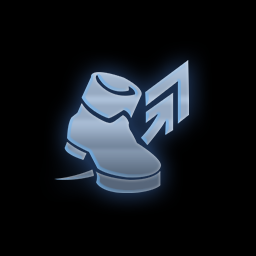
경량급 Ⅰ |
비용이 1과 2인 챔피언이 25%의 공격 속도 및 이동 속도를 획득한다. |
응급처치 키트 |
유닛이 받는 모든 회복 효과와 보호막 효과가 35% 증가한다. |
임시변통 방어구 Ⅰ |
아이템이 없는 아군 유닛이 35의 방어력과 마법 저항력을 얻는다. |
단결된 의지 Ⅰ |
아군 유닛이 전체적으로 활성화된 특성 하나당 2의 공격력과 주문력을 획득한다. |
사냥의 전율 Ⅰ |
아군 유닛이 적을 처치하면 400의 체력을 회복한다. |
약자 |
살아남은 아군 유닛이 상대보다 적다면 아군 유닛이 매초 체력을 9%만큼 회복한다.(최대 150) |
약점 Ⅰ |
아군 유닛이 공격 시 5초 동안 대상 방어력의 20%를 무시하고 대상이 받는 회복 효과를 50% 감소시킨다. |
비전 마법사 심장 |
팀에 비전 마법사 1명이 추가로 포함된 것으로 간주한다. 스웨인을 획득한다. |
룬 보호막 Ⅰ |
전투 시작 시 비전 마법사가 8초 동안 주문력의 300%에 해당하는 보호막을 얻는다. 스웨인을 획득한다. |
암살자 심장 |
팀에 암살자 1명이 추가로 포함된 것으로 간주한다. 탈론을 획득한다. |
자객 |
암살자들이 첫 공격 대상의 마나를 강탈하여 대상이 주문을 사용하기 전까지 최대 마나가 50% 증가한다.
탈론을 획득한다.
|
경호대 심장 |
팀에 경호대 1명이 추가로 포함된 것으로 간주한다. 블리츠크랭크를 획득한다. |
내가 지킨다 |
경호대가 얻는 추가 방어력이 25% 증가한다.
전투 시작 시 경호대가 바로 뒤에 있는 경호대가 아닌 아군들에게 100%의 방어력을 부여한다.(중첩불가)
블리츠크랭크를 획득한다.
|
난동꾼 심장 |
팀에 난동꾼 1명이 추가로 포함된 것으로 간주한다. 세주아니를 획득한다. |
강인함 |
난동꾼이 매초 최대 체력의 2.5%를 회복한다. 세주아니를 획득한다. |
도전자 심장 |
팀에 도전자 1명이 추가로 포함된 것으로 간주한다. 퀸을 획득한다. |
준비 태세 |
적이 처음으로 도전자에게 공격당하면 2.5초 동안 무장 해제된다. 워윅을 획득한다. |
화학적 과부하 Ⅰ |
화학공학이 사망 시 폭발하여 2칸 내 적에게 적 최대 체력의 20%만큼 마법 피해를 입힌다. 워윅을 획득한다. |

화학공학 심장 |
팀에 화학공학 1명이 추가로 포함된 것으로 간주한다. 워윅를 획득한다. |

시계태엽 심장 |
팀에 시계태엽 1명이 추가로 포함된 것으로 간주한다. 질리언을 획득한다. |
강화술사 심장 |
팀에 강화술사 1명이 추가로 포함된 것으로 간주한다. 룰루을 획득한다. |
불타는 향로 |
강화술사에 의해 회복 및 보호막 효과를 얻은 아군은 전투가 끝날 때 까지 45%의 중첩되는 공격 속도를 획득한다.(최대 3초에 1회)
룰루를 획득한다.
|
집행자 심장 |
팀에 집행자 1명이 추가로 포함된 것으로 간주한다. 세주아니를 획득한다. |
자가 복구 |
혁신적 로봇이 처치되면 대상으로 지정할 수 없는 상태가 되며 혁신가가 아직 살아있으면 스스로를 복구한다. 질리언을 획득한다. |
용병 심장 |
팀에 용병 1명이 추가로 포함된 것으로 간주한다. |
해적 |
용병이 적을 처치하면 66%의 확률로 1골드가 떨어진다. 퀸을 획득한다. |
돌연변이의 심장 |
팀에 돌연변이 1명이 추가로 포함된 것으로 간주한다. 렉사이를 획득한다. |
불안정한 진화 |
돌연변이는 2성이 되면 500의 체력, 30%의 공격 속도, 30의 공격력, 30의 주문력 중 하나의 효과를 무작위로 얻는다.
이 효과는 중첩된다. 렉사이를 획득한다.
|
학자 심장 |
팀에 학자 1명이 추가로 포함된 것으로 간주한다. 자이라를 획득한다. |
평생 학습 |
전투가 끝난 후 학자가 영구적으로 2의 주문력을 얻는다. 전투에서 생존한 경우 3의 주문력을 추가로 얻는다.
신드라를 획득한다.
|
고물상 심장 |
팀에 고물상 1명이 추가로 포함된 것으로 간주한다. 블리츠크랭크를 획득한다. |
저격수 심장 |
팀에 저격수 1명이 추가로 포함된 것으로 간주한다. 애쉬를 획득한다. |
이중주 |
사교계 스포트라이트를 추가로 1개 소환한다. 스포트라이트를 받은 유닛은 체력을 200 얻는다. 세나를 획득한다. |
사교계 심장 |
팀에 사교계 1명이 추가로 포함된 것으로 간주한다. |
범죄 조직 심장 |
팀에 범죄 조직 1명이 추가로 포함된 것으로 간주한다. 자이라를 획득한다. |
물려주기 |
범죄 조직이 사망하면 다른 범죄 조직에게 15의 공격력과 주문력을 부여한다. 애쉬를 획득한다. |
수금 |
전투에서 승리하고 살아남은 범죄 조직 하나당 1의 추가 골드를 획득한다. 애쉬를 획득한다. |
쌍발총의 심장 |
팀에 쌍발총 1명이 추가로 포함된 것으로 간주한다. 코르키를 획득한다. |
보물창고 Ⅰ |
파란색 전리품 구 1개와 회색 전리품 구 1개를 획득한다. |
대격변 생성기 |
전장에 있는 챔피언들이 비용이 1 높은 무작위 챔피언으로 영구히 바뀐다.
자석 제거기 2개를 획득한다.
|
수호자 Ⅰ |
전투 시작 시 모든 아군 유닛이 인접한 아군에게 8초 동안 160의 피해를 흡수하는 보호막을 부여한다. |
고전압 Ⅰ |
아군 유닛이 치명타를 입으면 주변 적에게 60~105(현재 스테이지에 비례)의 마법 피해를 입힌다.
(재사용 대시기간 1초) |
분해기 Ⅰ |
아군 유닛의 기본 곡격이 대상 최대 체력의 1.5%에 해당하는 추가 마법 피해를 입힌다. |
루덴의 메아리 Ⅰ |
아군 유닛이 스킬을 사용해 스킬 피해를 입히면 처음 적중한 대상과 그 주변 적 하나가 70~130(현재 스테이지에 비례)의 추가 마법 피해를 입는다. |
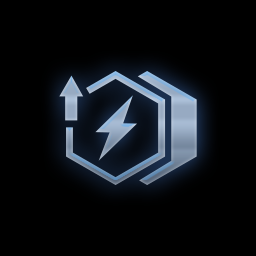
후방 지원 Ⅰ |
후방 2열에서 전투를 시작하는 아군 유닛이 20%의 공격 속도를 얻는다. |

방패진 Ⅰ |
후방 2열에서 전투를 시작하는 아군 유닛이 25의 방어력 및 마법 저항력을 얻는다. |
전투 마법사 Ⅰ |
전방 2열에서 전투를 시작하는 아군 유닛이 25의 주문력을 얻는다. |
명상 Ⅰ |
아이템을 장착하지 않은 아군 유닛이 매초 5의 마나를 회복한다. |
사이버네틱 통신 Ⅰ |
아이템을 장착한 아군 챔피언이 125의 체력을 얻고 매초 2의 마나를 회복한다. |
사이버네틱 외피 Ⅰ |
아이템을 가진 챔피언이 125의 체력과 25의 방어력을 얻는다. |
재생의 바람 Ⅰ |
전투 시작 10초 후 아군 유닛이 잃은 체력의 50%를 회복한다. |
문제가 두 배 Ⅰ |
전장에 똑같은 챔피언이 정확히 둘 있다면 둘 다 공격력, 주문력, 방어력, 마법 저항력이 25 상승한다.
챔피언을 3성으로 업그레이드하면 동일한 2성 챔피언 하나를 획득한다.
|
3에 깃든 힘 Ⅰ |
아군 3단계 유닛의 체력이 133, 시작 마나가 13, 공격 속도가 13% 증가한다. |
파란색 배터리 Ⅰ |
아군 유닛이 스킬을 사용한 후 10의 마나를 회복한다. |
진정한 정의 |
아군 집행자가 체력이 80% 아래인 적에게 고정 피해를 입힌다. 세주아니를 획득한다. |
연미복 심장 |
팀에 연미복 1명이 추가로 포함된 것으로 간주한다. 탈론을 획득한다. |
비축 에너지 |
아군 마법공학 챔피언들이 아군 마공학 핵의 파동에 맞을 때 마다 1의 주문력을 영구적으로 얻는다. 스웨인을 획득한다. |
마법공학 방출 |
마법공학 챔피언의 체력이 처음으로 60% 아래로 떨어지면 주변 적이 다음 스킬을 사용할 때까지 최대 마나가 50% 증가한다.
녹턴을 획득한다. |
넘치는 힘 |
타격대가 2번 기본 공격할 때마다 다음 기본 공격의 치명타 확률이 75% 증가한다.
렉사이를 획득한다. |
타격대 심장 |
팀에 타격대 1명이 추가로 포함된 것으로 간주한다.
렉사이를 획득한다. |
도전자 단합 |
모든 아군 챔피언이 도전자 특성의 효과를 받는다. 도전자의 수는 변하지 않는다. 퀸을 획득한다. |

사시사철 |
무작위 4단계 챔피언 셋을 획득한다. |
꼬마 거인 |
전략가가 체력을 35 회복하고, 크기가 커지고, 최대 체력이 135까지 증가한다. |
3단계 마법공학 증강체
| 증강체 명 |
기능 |
뜻밖의 횡재 |
현재 보유한 증강 수에 비례해 골드를 획득한다.
0 = 20골드, 1 = 35골드, 2 = 55골드
|
현명한 소비 |
4골드를 획득한다. 상점을 새로고침하면 2의 경험치를 획득한다. |
큰손 |
3개의 사기 주사위와 8골드를 획득한다. |
아이템 꾸러미 Ⅱ |
무작위 완성 아이템 2개와 재조합기를 획득한다. |
도적 무리 |
도적의 장갑 2개를 획득한다. |
신병 |
최대 팀 규모가 1 증가한다. |
황금 티켓 |
상점을 새로고침할 때마다 50% 확률로 무료 새로고침을 획득한다. |
레벨 업! |
경험치를 구매하면 3의 추가 경험치를 얻는다. 이제 10레벨에 도달할 수 있다. |
품격있는 쇼핑 |
현재 플레이어 레벨보다 1레벨 높을 때 나오는 챔피언이 상점에 등장한다. 8골드를 획득한다. |
숲의 부적 |
전투 시작 시 가장 체력이 높은 아군 챔피언이 1800의 체력을 가진 분신 하나를 생성한다. (아이템 제외) |
진보의 행진 |
라운드마다 추가로 5의 경험치를 획득한다.
더는 골드를 사용해 레벨 업할 수 없습니다. |
추방자 Ⅲ |
인접한 아군 없이 전투를 시작하는 아군은 8초 동안 최대 체력의 70%에 해당하는 보호막을 획득한다. |
경량급 Ⅲ |
비용이 1과 2인 챔피언이 55%의 공격 속도 및 이동 속도를 획득한다. |
나이프의 날 Ⅲ |
전방 2열에서 전투를 시작하는 아군 유닛이 55의 공격력을 얻는다. |
사이버네틱 이식술 Ⅲ |
아이템을 가진 챔피언이 300의 체력과 30의 공격력을 얻는다. |
다른 태생 Ⅲ |
활성화된 특성이 없는 아군 유닛이 500의 체력과 80%의 공격 속도를 얻는다. |
단결된 의지 Ⅲ |
아군 유닛이 전체적으로 활성화된 특성 하나당 5의 공격력과 주문력을 획득한다. |
임시변통 방어구 Ⅲ |
아이템이 없는 아군 유닛이 75의 방어력과 마법 저항력을 얻는다. |
천상의 축복 Ⅲ |
아군 유닛이 공격과 스킬로 입힌 피해의 35%만큼 체력을 회복한다.
초과된 회복량은 최대 600의 피해를 흡수하는 보호막으로 전환된다. |
룬 보호막 Ⅲ |
전투 시작 시 비전 마법사가 주문력의 600%에 해당하는 보호막을 8초 동안 얻는다. |
비전 마법사 왕관 |
비전 마법사 상징 2개를 획득한다. |
암살자 왕관 |
암살자 상징 2개를 획득한다. |
경호대 왕관 |
경호대 상징 2개를 획득한다. |
난동꾼 왕관 |
난동꾼 상징 2개를 획득한다. |
도전자 왕관 |
도전자 상징 2개를 획득한다. |
화학적 과부하 Ⅲ |
화학공학이 사망 시 폭발하여 2칸 내 적에게 적 최대 체력의 40%만큼 마법 피해를 입힌다. |
화학공학 왕관 |
화학공학 상징 2개를 획득한다. |
시계태엽 영혼 |
팀에 시계태엽 2명이 추가로 포함된 것으로 간주한다. 8골드를 획득한다. |
강화술사 영혼 |
팀에 강화술사 2명이 추가로 포함된 것으로 간주한다. 12골드를 획득한다. |
집행자 영혼 |
팀에 집행자 2명이 추가로 포함된 것으로 간주한다. 8골드를 획득한다. |
용병 영혼 |
팀에 용병 2명이 추가로 포함된 것으로 간주한다. |
돌연변이 왕관 |
돌연변이 상징 2개를 획득한다. |
학자 영혼 |
팀에 학자 2명이 추가로 포함된 것으로 간주한다. 8골드를 획득한다. |
고물상 영혼 |
팀에 고물상 2명이 추가로 포함된 것으로 간주한다. 8골드를 획득한다. |
저격수 왕관 |
저격수 상징 2개를 획득한다. |
사교계 영혼 |
팀에 사교계 2명이 추가로 포함된 것으로 간주한다. |
범죄 조직 왕관 |
범죄 조직 상징 2개를 획득한다. |
쌍발총 영혼 |
팀에 쌍발총 2명이 추가로 포함된 것으로 간주한다. 4골드를 획득한다. |
황금빛 선물 Ⅱ |
황금 전리품 구 2개와 회색 전리품 구 4개를 획득한다. |
보물창고 Ⅲ |
파란색 전리품 구 3개와 회색 전리품 구 2개를 획득한다. |
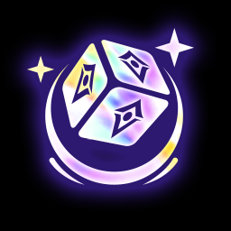
찬란한 유물 |
무기고를 열어 찬란한 아이템 4가지 중 1개를 선택한다. |
황금 알 |
7턴 안에 부화하는 거대한 황금 알을 획득한다. |
신록의 장막 |
아군 유닛이 전투 시작 후 15초 동안 군중 제어 효과에 면역이 된다. |
약점 Ⅲ |
아군 유닛이 공격 시 5초 동안 대상 방어력의 60%를 무시하고 대상이 받는 회복 효과를 50% 감소시킨다. |
예견 Ⅱ |
다음에 싸울 상대를 알 수 있다. 찬란한 서풍을 획득한다. |
파란색 배터리 Ⅲ |
아군 유닛이 스킬을 사용한 후 20의 마나를 회복한다. |
고전압 Ⅲ |
아군 유닛이 치명타를 입으면 주변 적에게 115~220(현재 스테이지에 비례)의 마법 피해를 입힌다. (재사용 대기시간 1초) |
분해기 Ⅲ |
아군 유닛의 기본 공격이 대상 최대 체력의 4%에 해당하는 추가 마법 피해를 입힌다. |
루덴의 메아리 Ⅲ |
아군 유닛이 스킬을 사용해 스킬 피해를 입히면 처음 적중한 대상과 그 주변 적 하나가 140~260(현재 스테이지에 비례)의 추가 마법 피해를 입는다. |

후방 지원 Ⅲ |
후방 2열에서 전투를 시작하는 아군 유닛이 45%의 공격 속도를 얻는다. |
방패진 Ⅲ |
후방 2열에서 전투를 시작하는 아군 유닛이 50의 방어력 및 마법 저항력을 얻는다. |
전투 마법사 Ⅲ |
전방 2열에서 전투를 시작하는 아군 유닛이 50의 주문력을 얻는다. |
명상 Ⅲ |
아이템을 장착하지 않은 아군 유닛이 매초 10의 마나를 회복한다. |
사이버네틱 통신 Ⅲ |
아이템을 장착한 아군 챔피언이 300의 체력을 얻고 매초 4의 마나를 회복한다. |
사이버네틱 외피 Ⅲ |
아이템을 장착한 아군 챔피언이 300의 체력과 50의 방어력을 얻는다. |
문제가 두 배 Ⅲ |
전장에 똑같은 챔피언이 정확히 둘 있다면 둘 다 공격력, 주문력, 방어력, 마법 저항력이 45 상승한다.
챔피언을 3성으로 업그레이드하면 동일한 2성 챔피언 하나를 획득한다. |
3에 깃든 힘 Ⅲ |
아군 3단계 유닛의 체력이 333, 시작 마나가 33, 공격 속도가 33% 증가한다. |
연미복 왕관 |
연미복 상징을 2개 획득한다. |
마법공학 왕관 |
마법공학 상징을 2개 획득한다. |
타격대 왕관 |
타격대 상징을 2개 획득한다. |
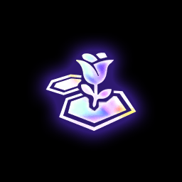
스포트라이트 공유 |
전투 시작 시 스포트라이트에 인접한 아군들이 스포트라이트 효과의 100%를 얻는다. 세나를 획득한다. |
명사수 |
쌍발총의 원거리 공격 및 스킬이 한 번 튕기며 66% 감소한 피해를 입힌다. 코르키를 획득한다. |
시즌6 시너지
계열
경쟁자
4
5
이 특성은 정확히 하나의 경쟁자 유닛이 있을 때만 활성화된다.
지난 시즌의 '자매'와 반대되는 개념
바이 - 마나 소모량 20 감소
징크스 - 처치 관여 시 3초 동안 공격 속도가 40% 증가
고물상
1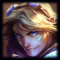
2 3
4
5
3
4
5
전투 시작 시 고물상 챔피언이 보유한 조합 아이템은 전투가 끝날 때까지 완성 아이템으로 변한다.
또한 아군은 완성 아이템의 일부를 포함하여 보유한 모든 조합 아이템마다 보호막을 얻는다.
(2) 조합 아이템 1개를 완성 아이템으로 변경 + 조합 아이템 하나당 보호막 20
(4) 조합 아이템 3개를 완성 아이템으로 변경 + 조합 아이템 하나당 보호막 35
(6) 모든 조합 아이템을 완성 아이템으로 변경 + 조합 아이템 하나당 보호막 60
대식가
5
(1) 준비 단계마다 한 번씩 탐 켄치가 대기석에 있는 아군 하나를 삼켜 주문력, 체력, 방어력
또는 마법 저항력 중 하나를 영구적으로 부여한다.
대기석에 있는 아군을 탐 켄치 위로 드래그해 입을 벌릴 때까지 기다렸다가 놓으면 탐 켄치가 아군을 먹는다.
돌연변이
1
2
3
 4
5
4
5
(3) ???
(5) ???
(7) ???
돌연변이 시너지 목록
공허 태생
(3) 돌연변이가 체력이 20% 아래인 대상에게 피해를 입히면 처형
(5) 또한 돌연변이의 피해량 중 40% 고정 피해로 전환
(7) 또한 돌연변이의 피해량 중 80% 고정 피해로 전환
생명력 흡수
아군이 모든 피해 흡혈 효과를 얻는다.(입힌 모든 피해 비례 체력 회복)
(3) 모든 피해 30% 흡혈
(5) 모든 피해 55% 흡혈
(7) 모든 피해 80% 흡혈
식탐
아군이 죽을 때마다 돌연변이가 강해진다.
(3) 공격력과 주문력 +20
(5) 공격력과 주문력 +30
(7) 공격력과 주문력 +40
신경망
돌연변이의 스킬 마나 소모량 감소 (최소 10의 마나)
(3) 마나 20 감소
(5) 마나 40 감소
(7) 마나 40 감소, 추가 주문력 50
아드레날린 분출
돌연변이가 기본 공격 시 일정 확률로 대상을 2회 추가로 공격한다.
(3) 확률 40%
(5) 확률 75%
(7) 확률 100%, 추가 공격력 40
사이버네틱 강화
돌연변이가 아이템을 하나 이상 보유하고 있으면 추가 능력치를 얻는다.
(3) 체력 450 및 공격력 30
(5) 체력 900 및 공격력 60
(7) 체력 1350 및 공격력 90
변신
돌연변이가 2초마다 성장하여 최대 5회 중첩되는 추가 효과를 얻는다.
(3) 방어력과 마법 저항력 +18, 공격력과 주문력 +2
(5) 방어력과 마법 저항력 +25, 공격력과 주문력 +4
(7) 방어력과 마법 저항력 +35, 공격력과 주문력 +7
마법공학
1
 2
3
4
2
3
4
전투 시작 시 및 전투 중 6초에 한 번씩 마공학 핵이 파동을 방출한다.
파동에 맞은 아군 마법공학 챔피언은 4초 동안 지속되는 보호막을 얻는다.
보호막이 남아있는 동안 기본 공격 적중 시 추가 마법 피해를 입히며, 보호막은 중첩되지 않는다.
또한 마공학 핵에 있는 증강 하나당 보호막 피해 흡수량 및 추가 마법 피해가 20% 증가한다.
(2) 보호막 120, 마법 피해 15
(4) 보호막 170, 마법 피해 30
(6) 보호막 340, 마법 피해 60
(8) 보호막 700, 마법 피해 120
범죄 조직
1
2
3
4
아래의 아군이 그림자에 숨어 55의 방어력, 55의 마법 저항력, 20%의 모든 피해 흡혈 효과를 얻는다.
(입힌 모든 피해 비례 체력 회복)
(3) 가장 낮은 체력을 가진 범죄 조직 챔피언
(5) 모든 범죄 조직 챔피언
(7) 아군 전체, 효과 60% 증가
사교계
3
4
5
사교계는 전장에 스포트라이트를 드리운다. 전투 시작 시 스포트라이트를 받는 유닛은 고유 추가 효과를 얻는다.
스포트라이트는 무작위로 장소가 정해지고, 게임 중 바뀌지 않으며 모든 플레이어가 동일하게 적용된다.
(1) 추가 피해 15%
(2) 위 효과 + 초당 마나 4
(3) 위 효과 + 입힌 모든 피해의 33%만큼 체력 회복
(5) 모든 추가 효과 두 배 증가
시계태엽
1 2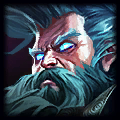
4
2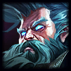
4
아군의 공격 속도가 상승한다. 마공학 핵의 증강 수에 따라 효과가 더욱 강화된다.
공격 속도 +10% + 증강 하나당 +5%
공격 속도 +35% + 증강 하나당 +10%
공격 속도 +80% + 증강 하나당 +15%
연미복
1
2
3
4
5
연미복 챔피언은 추가 체력과 주문력을 얻는다.
연미복 VIP를 전장에 배치하면 고유 추가 효과가 활성화된다.
VIP 챔피언은 연미복 시너지를 활성화하지 않은 상태에서도 상점에 등장할 수 있지만,
연미복 시너지를 활성화시키지 않으면 VIP 효과도 활성화되지 않음.
(3) 체력 200, 주문력 20
(5) 체력 450, 주문력 45
(7) 체력 800, 주문력 80
요들
1
2
 3
3
(3) 플레이어와 전투를 마칠 때마다 무작위 요들 하나가 무료로 대기석에 추가(요들 차원문)
(6) 요들의 스킬 마나 소모량 30% 감소
요들군주
5
(1) 요들 특성 효과
모든 요들이 3성이 되면 요들 차원문에서 베이가가 소환된다.
용병
1
2
3
5
플레이어를 상대로 전투에서 승리하면 열리는 보물 상자를 획득한다.
플레이어를 상대하는 준비 단계가 시작되면 주사위를 굴려 상자에 전리품을 추가한다.
상자를 더 오래 열지 않을수록 주사위에 행운이 증가한다.
(3) 주사위 2개 굴리기
(5) 주사위의 행운이 더욱 강력해진다.
(7) 승리 시 추가 전리품을 부여하는 3번째 주사위 굴리기
집행자
1
2
4
5
(3) 집행자가 전투 시작 시 체력이 가장 높은 적을 기절시킨다.
대상운 4초 후 또는 최대 체력의 40%를 잃은 다음 기절에서 벗어난다.
군중 제어 효과에 면역인 적은 기절시키지 않는다.
(5) 집행자의 공격 속도가 80% 증가한다.
화학공학
1
2 3
4
5
3
4
5
화학공학 챔피언의 체력이 75% 아래로 떨어지면 화공 강화 상태가 되어 8초 동안 공격 속도가 상승하고, 받는 피해량이 20% 감소하며,
매초 최대 체력의 일부를 회복한다.
(3) 공격 속도 15%, 체력 4%
(5) 공격 속도 40%, 체력 7%
(7) 공격 속도 80%, 체력 10%
(9) 공격 속도 200%, 체력 18%
흑막
5
전투 시작 시 흑막은 바로 앞에 있는 아군 2명에게 30의 마나를 부여한다. 이 효과는 중첩되지 않는다.
직업
강화술사
2
3
4
아군이 추가 마법 저항력을 얻는다. 강화술사가 체력 회복 및 보호막 효과를 추가로 얻는다.
(2) 마법 저항력 20, 체력 회복량 및 보호막 흡수량 25%
(3) 마법 저항력 35, 체력 회복량 및 보호막 흡수량 40%
(4) 마법 저항력 50, 체력 회복량 및 보호막 흡수량 60%
(5) 마법 저항력 75, 체력 회복량 및 보호막 흡수량 100%
거신
3
4
5
고유 : 거신은 더 거대하고 강력하며, 추가 체력을 800 얻고 군중 제어 효과에 면역이다.
거신 하나당 2개의 팀 슬롯이 필요하다.
(2) 거신 챔피언이 받는 피해 25% 감소
(3) 거신 챔피언이 추가 체력을 1600 얻는다.
경호대
1
2
3
4
5
경호대는 방어력이 증가한다. 전투 시작 얼마 후, 보호막을 얻고 근처 적들을 도발해 경호대를 공격하게 한다.
(2) 방어력 80, 보호막 150
(4) 방어력 160, 보호막 150
(6) 방어력 250, 보호막 700
(8) 방어력 450, 보호막 1200
난동꾼
1
2
3
4
5
아군의 최대 체력이 증가한다. 난동꾼은 두 배로 증가한다
(2) 체력 125
(4) 체력 225
(6) 체력 450
(8) 체력 800
변형술사
5
제이스가 전방 2열에서는 근접 공격, 후방 2열에서는 원거리 공격을 한다.
비전 마법사
1
2
3
4
5
(2) 아군의 주문력 20 증가
(4) 아군의 주문력 20 증가, 비전 마법사는 40 추가 증가
(6) 아군의 주문력 50 증가, 비전 마법사는 50 추가 증가
(8) 아군의 주문력 145 증가
쌍발총
2
3
5
쌍발총 챔피언은 추가 공격력을 얻으며, 기본 공격하거나 스킬을 사용할 때 일정 확률로 두 번 공격한다.
(2) 공격력 10, 40% 확률
(3) 공격력 25, 55% 확률
(4) 공격력 45, 70% 확률
(5) 공격력 80, 100% 확률
 암살자
암살자
1
2
3
4
고유 : 전투 시작 시 암살자는 적의 후방으로 도약한다.
암살자는 추가 치명타 피해량과 확률을 획득하며, 스킬에 치명타가 적용될 수 있다.
(2) 치명타 확률 +10% 및 치명타 피해량 +20%
(4) 치명타 확률 +30% 및 치명타 피해량 +40%
(6) 치명타 확률 +50% 및 치명타 피해량 +60%
 저격수
저격수
1
2
3
4
5
고유 : 저격수의 공격 사거리가 1칸 증가한다.
저격수와 대상 사이에 놓인 칸 하나당 해당 저격수가 입히는 피해량이 증가한다.
(2) 추가 피해 8%
(4) 추가 피해 16%
(6) 추가 피해 30%
타격대
1
2
3
4
(2) 공격력 +30
(4) 공격력 +65
(6) 공격력 +110
학자
1
2
4
5
(2) 5마나
(4) 10마나
(6) 20마나
혁신가
1
2
3
4
5
혁신가는 기계 동료를 만들어 전장에서 함께 싸운다. 기계 동료는 아군 혁신가의 별 등급에 따라 추가 체력 및 공격력을 얻는다.
(3) 기계 풍뎅이
(5) 기계 곰
(7) 기계 용
기계 동료 세부 정보
기계 풍뎅이
반사 보호막
풍뎅이가 자신과 가장 많은 적에게 대상으로 지정된 아군에게 보호막을 부여하고 공격 사거리 내에 풍뎅이가
있는 모든 적을 도발하여 자신을 공격하게 한다.
보호막은 4초 동안 유지되며 받는 피해가 25% 감소하고 보호막을 공격한 적은 마법 피해를 입는다.
기계 곰
힘의 고조
곰의 힘이 고조되어 4초 동안 70%의 추가 공격력을 얻고 아군에 공격력 및 주문력 20을 부여한다.
기계 용

전기 포효
용이 착지하여 우렁찬 포효를 뿜어내고 5칸 내의 모든 적들이 2초 동안 도망친다.
아군은 충전 상태가 되어 8초 동안 치명타 확률이 75%, 치명타 피해량이 10% 증가한다.
기본 지속 효과 : 3번째 공격마다 번개가 충전되어 3명의 적에게 추가 마법피해를 입힌다.
전반기 시즌별 삭제된 챔피언/시너지
각 시즌별로 전반기에 삭제된 챔피언과 시너지에 관해 다룬다.
시즌3 전반기
시즌3 전반기에 삭제된 시너지와 챔피언들이다.
삭제된 계열/직업
발키리
2
4 5
5
(2) 발키리는 체력이 40% 미만인 대상에게 기본 공격 또는 스킬 사용 시 항상 치명타가 적용된다.
시즌4 전반기
시즌4 전반기에 삭제된 시너지와 챔피언들이다.
삭제된 계열/직업
그림자
2
3
4
고유 - 전투 시작 시 그림자는 적진 후방으로 순간이동한다.
3회 공격 시마다 그림자 속으로 숨어 투명 상태가 되고 다음 기본 공격으로 추가 마법 피해를 입힌다.
(2) 추가 피해 125
(3) 추가 피해 400
(4) 추가 피해 750
달빛
1
2
(3) 전투 시작 시 일부 달빛 챔피언의 별 등급이 끝날 때까지 한 단계 상승한다.
(별 등급이 가장 낮은 챔피언에게 우선적으로 적용됨, 등급이 같을 경우 아이템이 가장 많은 챔피언의 등급이 상승함)
(3) 챔피언 1명
(5) 챔피언 2명
 번뇌
번뇌
5
(1) 번뇌 챔피언은 전투에 3번 참여하면 변신해 스킬을 강화할 수 있다.
사냥꾼
2
3
4
몇 초마다 모든 사냥꾼은 남은 체력 비율이 가장 낮은 적을 공격해 추가 피해를 입힌다.
(2) 3.50초마다 125%의 추가 피해
(3) 3초마다 150%의 추가 피해
(4) 2.50초마다 175%의 추가 피해
(5) 2초마다 200%의 추가 피해
현혹술사
1
3
4
5
현혹술사의 스킬은 적의 공격력을 8초 동안 감소시킨다.
(2) 공격력 감소 40%
(4) 공격력 감소 80%
황혼
1
2
4
5
황혼 챔피언은 모든 아군 챔피언의 주문력을 증가시킨다.
(2) 모든 아군의 주문력이 20% 증가
(4) 황혼 챔피언의 주문력이 추가로 50% 증가
(6) 모든 아군의 주문력이 40% 증가. 황혼 챔피언은 추가로 70% 증가
삭제된 챔피언
2코스트(4)

3코스트(4)
4코스트(6)
시즌5 전반기
시즌5 전반기에 삭제된 시너지와 챔피언들이다.
삭제된 계열/직업
 망각
망각
1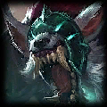
2
3
4
5
망각 챔피언은 추가 공격력 및 주문력을 얻는다. 또한 장착한 그림자 아이템 하나당 모든 망각 챔피언의 추가 능력치가 15% 증가한다.
최대 4회 중첩된다.
(3) 공격력 및 주문력 25
(6) 공격력 및 주문력 60
(9) 공격력 및 주문력 125
신록
3
4
5
신록 아군 주변에서 전투를 시작하는 챔피언들은 일정 시간 동안 군중 제어 효과에 면역이 된다.
(2) 5초
(3) 8초
악의 여단
1
2
3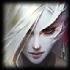
(3) 전투 시작 시 악의 여단 챔피언들의 중앙에 가장 가까운 챔피언은 악의 여단장으로 임명되어 추가 주문력이 60% 증가한다.
악의 여단 챔피언이 스킬을 사용할 때마다 소모한 마나의 15%가 악의 여단장에게 부여된다.
영겁
5
(1) 늑대가 양에게서 분리되어 전장 어디든 배치될 수 있다. 늑대는 팀 인원 수에 포함되지 않으며 양의 모든 추가 능력치를 얻는다.
용 사냥꾼
2
3
4
용 사냥꾼은 항상 추가 주문력을 얻는다.
용 사냥꾼 아군이 각 전투에서 최대 체력 1400 이상인 적 처치에 처음으로 관여하면 모든 아군이 전투가 끝날 대마다 추가 주문력을 얻는다.
(2) 용 사냥꾼 주문력 30 증가, 아군 주문력 20 증가
(4) 용 사냥꾼 주문력 70 증가, 아군 주문력 60 증가
(6) 용 사냥꾼 주문력 140 증가, 아군 주문력 100 증가
신왕
5
(1) 신왕은 라이벌 특성을 하나라도 지닌 적에게 20%의 추가 피해를 입힌다. 이 효과는 팀에 신왕이 단 1명일 때 발동한다.
가렌의 라이벌 : 망각, 어둠의 인도자, 악의 여단, 악동, 용 사냥꾼, 망령
다리우스의 라이벌 : 구원받은 자, 빛의 인도자, 신록, 용족, 철갑
삭제된 챔피언
3코스트(3)
4코스트(3)
시즌6 전반기
시즌6 전반기에 삭제된 시너지와 챔피언들이다.
삭제된 계열/직업
아카데미
1
2 3
4
5
3
4
5
아카데미는 추가 공격력과 주문력을 얻는다. 떠한 아군이 스킬을 쓸 때마다 학습해 추가 능력치를 얻는다.
(2) 공격력과 주문력 18, 아군이 스킬을 쓸 때마다 3
(4) 공격력과 주문력 40, 아군이 스킬을 쓸 때마다 5
(6) 공격력과 주문력 50, 아군이 스킬을 쓸 때마다 10
(8) 공격력과 주문력 70, 아군이 스킬을 쓸 때마다 15
자매
2
5
(2) 자매는 서로 경쟁하기 위해 강화된 스킬 사용
바이 : 바이의 스킬 사거리가 2칸 증가한다.
징크스 : 징크스가 처치 관여 시, 3초 동안 공격 속도가 40% 상승한다.
 제국
제국
2
3
4
전투 시작 시, 지난 전투에서 적에게 가장 많은 피해를 입힌 제국 챔피언이 폭군으로 변한다.
폭군은 추가 피해를 입히며, 사망 시 이번 전투에서 가장 많은 피해를 입힌 제국 챔피언이 새로운 폭군이 된다.
(3) 폭군의 추가 피해 75%
(5) 폭군의 추가 피해 135%, 다른 제국 챔피언의 추가 피해 75%
포근
5
전투 시작 시 유미가 가장 가까운 아군에게 밀착한다. 밀착 해제 후에는 2초 후 가장 체력이 낮은 아군에게 밀착한다.
밀착 시 아군에게 유미 최대 체력의 60%에 해당하는 보호막을 부여한다. 보호막이 깨지면 밀착 해제한다.
아군에게 밀착한 유미는 대상으로 지정할 수 없으며, 유미 또한 공격할 수 없지만, 그동안 매초 5의 마나를 회복하고, 아군이 공격할 때마다 10의 마나를 회복한다.
 2
2 4
5
4
5
 요들
요들 2
3
2
3
 싸움꾼
싸움꾼 암살자
암살자
 공격력 10
공격력 10


 공허
공허 4
4


 봉쇄자
봉쇄자